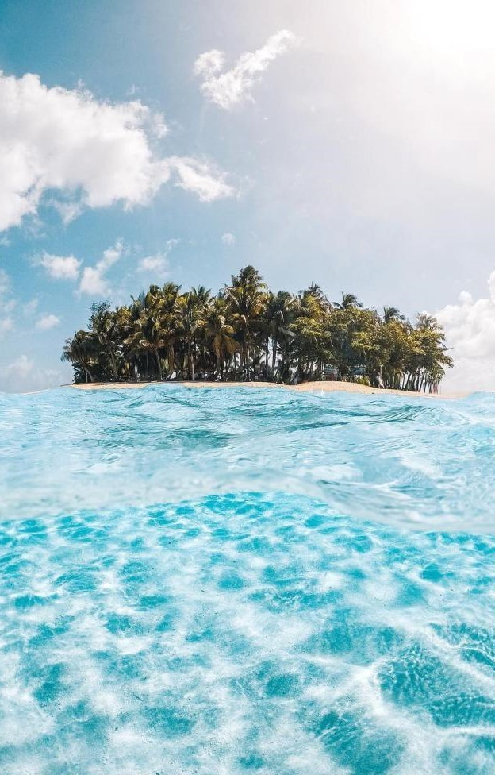

Caraga, also known as Region 13, is a region located in the northeastern part of Mindanao island in the Philippines. It is composed of five provinces: Agusan del Norte, Agusan del Sur, Surigao del Norte, Surigao del Sur, and Dinagat Islands. Caraga is known for its rich natural resources, diverse ecosystems, cultural heritage, and vibrant festivals.
Agusan del Norte is a province known for its lush forests, scenic rivers, and agricultural landscapes. It offers attractions such as the enchanting Tinuy-an Falls, the Agusan Marsh Wildlife Sanctuary, and the captivating Mount Hilong-Hilong. The province is also known for its festivals, including the Kahimunan Festival, which celebrates the indigenous culture of the Manobo and Higaonon tribes.
Agusan del Sur is a province known for its vast tracts of protected forests and natural attractions. It offers opportunities for eco-tourism, hiking, and wildlife observation. The province is home to the Agusan Marsh Wildlife Sanctuary, Mount Magdiwata, and the culturally significant Langihan Village.
Surigao del Norte is a province known for its pristine beaches, islands, and rich marine biodiversity. It offers attractions such as the world-famous surfing spot of Siargao Island, the enchanting Sohoton Cove, and the captivating Bucas Grande Island. Surigao del Norte is also known for its unique rock formations, including the iconic landmark known as the "Magpupungko Rock Pools."
Surigao del Sur is a province known for its stunning waterfalls, caves, and unspoiled natural landscapes. It offers attractions such as the enchanting Tinuy-an Falls, the breathtaking Britania Islands, and the captivating Hinatuan Enchanted River. The province is also known for its diverse indigenous cultures and traditions.
Dinagat Islands is a province known for its pristine beaches, clear waters, and unique rock formations. It offers attractions like the breathtaking Pangabangan Island, the mesmerizing Lake Bababu, and the fascinating Tidal Pool of Pangabangan. The province is also known for its captivating festivals, such as the Pakaradjan Festival, which showcases the local traditions and customs.
Caraga showcases the natural beauty, cultural heritage, and adventure opportunities in Mindanao. From surfing in Siargao to exploring enchanting waterfalls and marine sanctuaries, the region offers diverse experiences for visitors. Whether it's immersing in indigenous cultures, enjoying beach activities, or discovering hidden gems in nature, Caraga provides a unique and memorable destination for travelers.